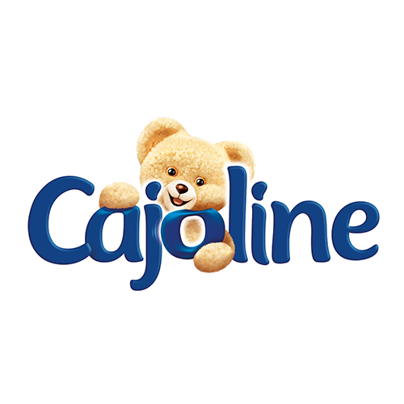
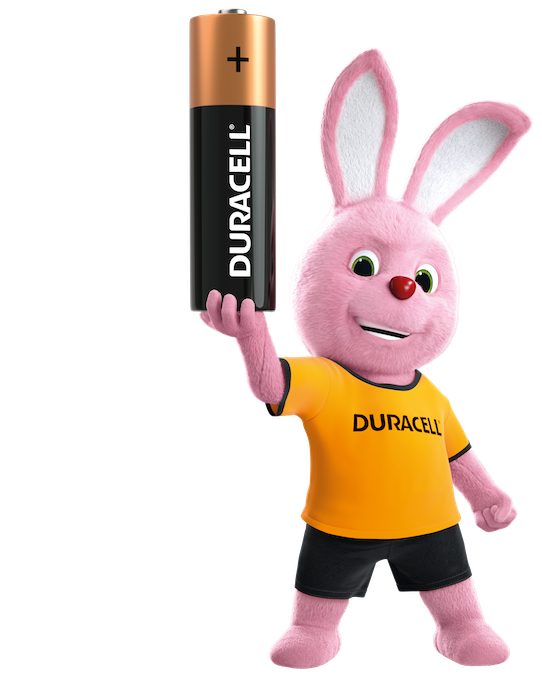
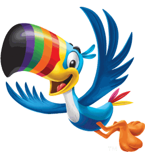
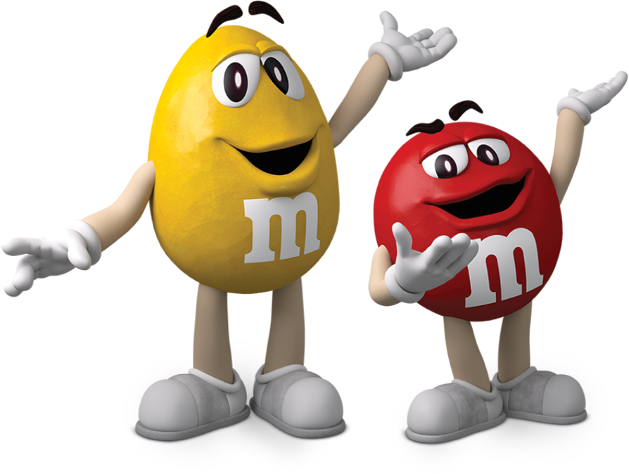
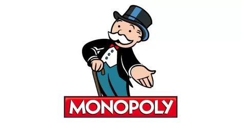
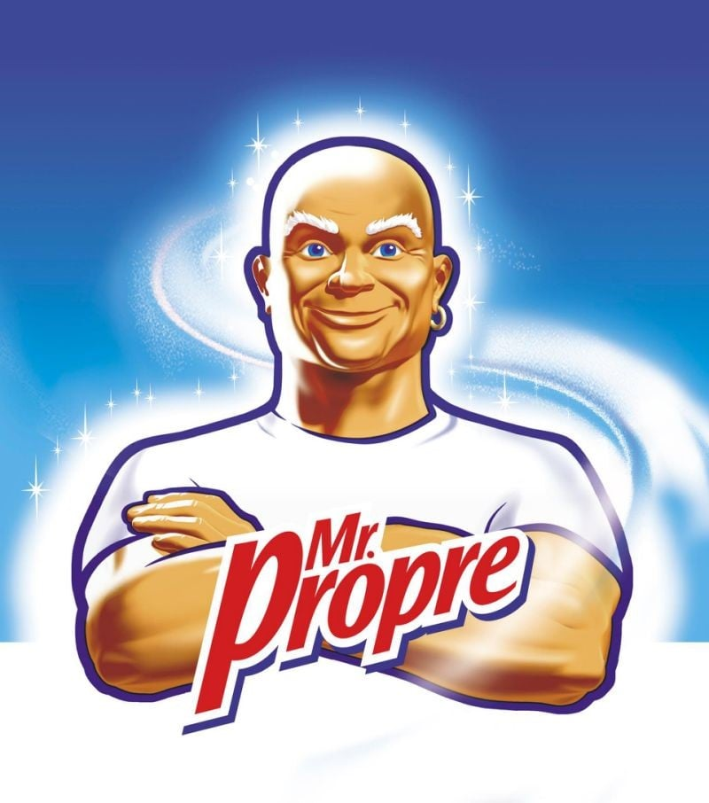
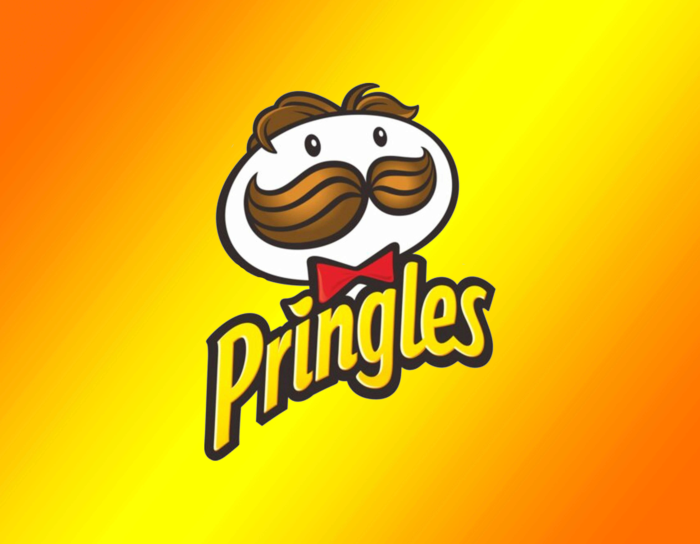
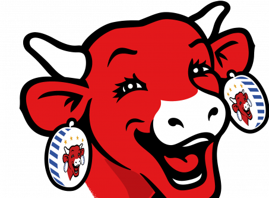

Petit ours Cajoline
Depuis presque 50 ans l'Ourson a pour mission de vous donner le sourire en rendant votre linge doux et fraîchement parfumé. Avec ses gammes variées, Cajoline répond à vos envies de douceur, ou fraîcheur et de parfum.
Petit lapin rose Duracell
Qui ne connaît pas le lapin Duracell ? Cette infatigable mascotte qui continue à taper sur son tambour quand tous les autres lapins sont déjà à plat est devenue un symbole tellement fort qu'il est parvenu à dépasser le contexte des publicités Duracell pour se faire une place dans l'inconscient collectif. Le lapin, symbole d'abondance et de travail pour les Aztèques, était l'animal parfait pour symboliser l'énergie supérieure des piles Duracell.
Toucan Froot Loops
Sam le Toucan est la mascotte de Froot Loops depuis sa mise en vente. Il s'agit d'un toucan bleu anthropomorphisé ; les couleurs de son bec correspondent aux trois couleurs d'origine des céréales. Il est décrit comme capable de sentir les Froot Loops de très loin et peut constamment localiser un bol de ces céréales en entonnant : "Follow my nose! For the fruity taste that shows!" ou "Follow my nose! It always knows!".
RED et YELLOW M&M
Le personnage iconique Red, Rouge en français, a été introduit pour la première fois en 1954. À la fois fort et confiant, c’est une mascotte à la personnalité charismatique et qui se démarque fortement des autres mascottes. Rouge a rapidement trouvé un compagnon : en 1960, il est rejoint par Yellow, Jaune en français, un personnage à la fois optimiste et énergique. Ses seuls défauts ? Il est un peu naïf et maladroit, mais ça le rend encore plus attachant.
Bibendum Michelin

Bibendum, aussi appelé Bonhomme Michelin, est la mascotte de Michelin, une manufacture française de pneumatiques. Créé en 1898, il est devenu emblématique de la marque ainsi qu'un élément familier du sport automobile, au même titre que le dirigeable Goodyear et les passerelles Dunlop.
Bibendum Michelin
Le personnage à la moustache blanche, au visage rond et chapeau haut de forme que l'on peut voir sur les boîtes de Monopoly serait inspiré de John Pierpont Morgan, un banquier américain très influent qui créa la célèbre banque d'affaires du même nom : JP Morgan.
Mr Propre - Mr. Clean
Lancée en 1958 aux États-Unis, la mascotte Mr Propre s’est donné pour vision de symboliser la force féerique d’un bon génie. Ce dernier accorde un avantage immanent, selon Gilbert Michèle, un responsable de la publicité de la marque Mr Propre. La mascotte Mr Propre est apparue en France pour la première fois en 1972 dans un spot télévisé. De son vrai nom Mr. Clean, le chauve fort naquit aux USA. Auparavant nettoyeur au maillot blanc pur, il devient en six mois un chef des transactions américain.
Mr Pringle
Mr Pringle est devenu un symbole du produit. C’était une tête d’homme avec des cheveux, des yeux et des sourcils noirs séparés et une moustache noire touffue. Pour comprendre la signification de ce symbole Pringles, il faut savoir que les Pringles sont des chips. Bien que les chips doivent leur goût à Alexander Liepa, un chercheur de P&G, le personnage caricatural du logo des Pringles ne ressemble pas du tout à l’homme, mais plutôt à une pomme de terre.
Vache qui rit
Mr Pringle est devenu un symbole du produit. C’était une tête d’homme avec des cheveux, des yeux et des sourcils noirs séparés et une moustache noire touffue. Pour comprendre la signification de ce symbole Pringles, il faut savoir que les Pringles sont des chips. Bien que les chips doivent leur goût à Alexander Liepa, un chercheur de P&G, le personnage caricatural du logo des Pringles ne ressemble pas du tout à l’homme, mais plutôt à une pomme de terre.